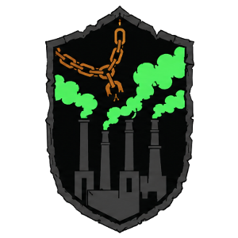
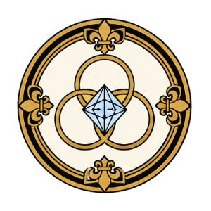
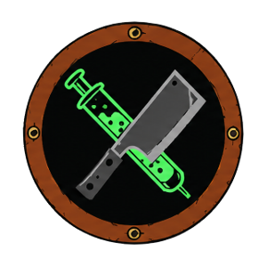
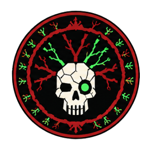

マギテックの輝きと、ケムテックの毒煙。
光と闇が交差するその境界線に、
変革の触媒が宿る。
二つの都市が、共に生き、互いを喰らっている。
アヴァリスは「頂の都市」と呼ばれ、マギテック——神秘的なエネルギーと先進工学が融合した革命的技術——を駆使して繁栄する文明の灯台だ。精巧な橋で連結され、次元を越えるポータルが輝くその都市は、武器と機械を世界中に輸出する。
しかし金箔の下、緻密に組まれた橋のはるか下方、毒の煙に埋もれて——フュームが息を潜めている。「煙の都市」と呼ばれるこの地は、アヴァリスの繁栄を支えるための資源と命を、黙々と差し出し続ける。ケムテック（化学技術）、薬物、そして忘却によって、民衆は骨抜きにされてきた。
しかし、灰の下に何かが燻っている。
些細な火花が、触媒となりうる。
Avaris — La Cité des Sommets
空高くそびえる「頂の都市」。マギテックの光を全身に纏い、文明の灯台として輝くアヴァリスは、革命的技術によって武器、機械、そして次元を越えるポータルを世界へ輸出する。
その権力は、強力な商業家族と評議会によって握られている。表向きは「啓蒙された文明」を掲げながら、実際には精密な抑圧と穏健派の操作によってフュームの搾取を維持する。

Fyumh — La Cité des Fumées
毒の煙と化学薬品の霧に包まれた「煙の都市」。アヴァリスの橋のはるか下方に沈むフュームは、何十年にもわたる疲弊、抑圧、そして諦念によって、闘争の記憶を封印されてきた。
ケム・バロン（化学男爵）たちが路地を支配し、ケムテックの違法改造、薬物、そして暗黒市場が横行する。しかし灰の下に、怒りの火が燻り続けている。
アヴァリスはマギテックで覇権を強化しつつ、「啓蒙された文明」のイメージを傷つける全面戦争を避ける。
フュームは評議会派（インデパンダン）とレフラクテールの間で引き裂かれながら、生き残りを模索する。
それぞれの正義と、それぞれの絶望。あなたはどの旗印の下に立つ？
Le Progrès
アヴァリスに生まれた地下抵抗組織。政府の抑圧と富裕な商業家族の影響力に立ち向かう。彼らは富裕層の計画を妨害し、正義を求める者たちと同盟を結ぶことで、アヴァリスの不平等に挑戦する。
多くのメンバーがこの闘いの終わりを見えずにいるが、より良い未来への希望は、体制に敢然と立ち向かう者たちの間で今もなお生きている。

Le Conseil — Classe Aristocratique
アヴァリスの貴族と有力商業家族からなる支配階級。都市の方向性を決定する権力と資源を持ち、ル・プログレを支持するか商業的利益と安定に忠実であり続けるかの選択に常に直面する。
大商業家族の世界は野心によって腐敗しているが、その決断一つが都市の運命を変える。忠誠は脆く、それが長期的にどこへ繋がるかを見極めることは難しい。

La Pègre — Les Chem-Barons
フュームのケム・バロン（化学男爵）たちと彼らの下に連なる犯罪組織。強力なリーダーの下、先進技術と厳格な規律を用いてフューム全域への支配を拡大する。彼らは暴力こそが真の変革をもたらす唯一の手段だと信じる。
フュームの路地裏、禁忌の医療実験、ケムテック密売——これらすべてが彼らの帝国を支える柱だ。
Les Indépendants
フュームの地下都市で鍛えられた独立市民たち。いかなる勢力にも与せず、危険と好機の間を独自の知恵で泳ぎ渡る。アヴァリスとフュームの間の争いには距離を置きながら、自分たちの存在を守り抜く。
フュームの薄暗い路地はルールのない世界だ。外の勢力がここでは通用しない。住民たちは自分たちの機知と、急速な変化への適応力だけで生き延びる。

Les Réfractaires — Chemtech Révolutionnaire
フュームの毒の腸内から生まれた秘密地下運動。怒りと変異によって結ばれた彼らは、服従も妥協も拒絶する。アヴァリスを打倒するか、その代償を払わせるか、あるいはその廃墟の上に新たな世界を築くかを目指す。
レフラクテールは解放を求めるイデオローグと、混乱の中に支配の機会を見出す群れのリーダーが混在する。彼らは皆、生きた・変異した・禁忌のケムテックを選んだ——鎖を断ち切り、新たな身体と新たな世界を鍛えるために。
フュームの暗闇の中、レフラクテールは灰の下の火種だ。反乱を自らの血管に、声に、行動に注入する。アヴァリスは交渉では倒れない——誰もが知っている。
触媒となりうる事件と、それを取り巻く陰謀の断片
子どもたちの秘密工房が焼け落ちた。唯一の生存者は「生きた青い光の心臓」について語る——それは何を意味するのか？
評議会がフュームとの国境に壁を建設し始めた。「市民を守るため」という名目の裏に隠された真の目的とは？
評議会の離反者がフュームに逃げ込んだ。マギテックが現実の織物を腐敗させているという証拠を持っていると彼女は主張する。
生まれながらに額に発光する印を持つ赤ちゃんが現れた。その予言は何を語り、なぜ多くの者の欲望を引きつけるのか？
科学者たちが人間の怒りを純粋なエネルギーに変換できる技術を開発したと主張する。誰がその研究に資金を提供したのか？
死んだとされていたフュームの元革命的リーダーが戻ってきた。「本当の戦争はまだ始まっていない」と彼は言う。